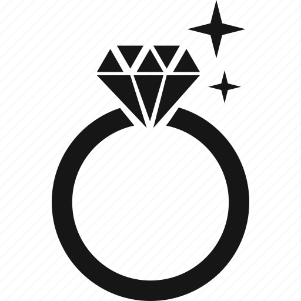

<nav class="navbar" role="navigation" aria-label="main navigation" *ngIf="utility.isLoggedIn$ | async">
  <div class="navbar-brand">
    <a class="navbar-item" routerLink="/">
      
      <h1 class="navbar-item title">My Arts</h1>
    </a>

    <a role="button" class="navbar-burger" aria-label="menu" aria-expanded="false" data-target="navbarBasicExample"
      (click)="onBurgerClick($event)">
      <span aria-hidden="true"></span>
      <span aria-hidden="true"></span>
      <span aria-hidden="true"></span>
    </a>
  </div>

  <div id="navbarBasicExample" class="navbar-menu">
    <div class="navbar-start">
      <a class="navbar-item" routerLink="main" [routerLinkActiveOptions]="{exact: true}" routerLinkActive="active">
        Products
      </a>

      <a class="navbar-item" routerLink="main/about" [routerLinkActiveOptions]="{exact: true}"
        routerLinkActive="active">
        About
      </a>

      <a class="navbar-item" *ngIf="utility.isArtist" routerLink="main/my-products"
        [routerLinkActiveOptions]="{exact: true}" routerLinkActive="active">
        My products
      </a>
      <a class="navbar-item" routerLink="main/my-favourites" [routerLinkActiveOptions]="{exact: true}"
        routerLinkActive="active">
        My favourites
      </a>

    </div>

    <div class="navbar-end">
      <div class="navbar-item">
        <div class="buttons">
          <a class="button is-primary" routerLink="main/my-user">
            <strong>My user</strong>
          </a>

          <a class="button is-light" (click)="logout()" *ngIf="utility.isLoggedIn$ | async">
            Log out
          </a>

          <a class="button is-light" (click)="goToShoppingCart()" *ngIf="utility.isLoggedIn$ | async">
            <i class="fa-solid fa-cart-shopping"></i>
          </a>

        </div>
      </div>
    </div>


  </div>
</nav>
